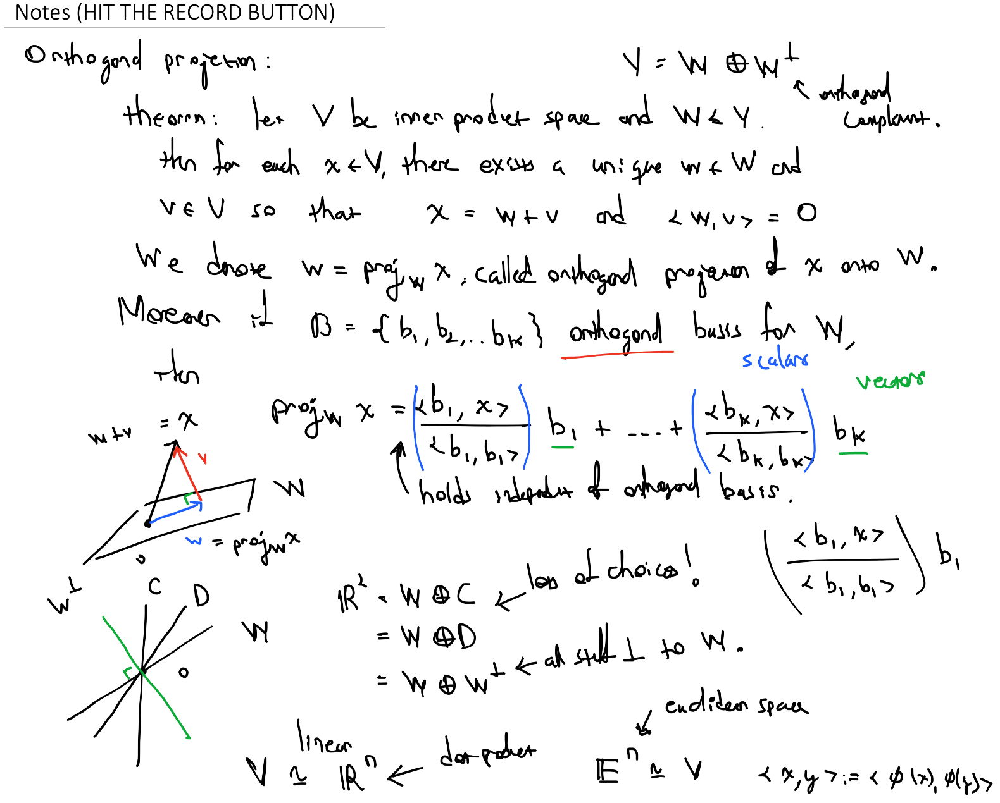

Teaching
Teaching is a huge part of being in the mathematical community. Either in a large lecture or a small seminar, we're always trying to share mathematics in some capacity. It's one of the many reasons I love mathematics so much! Here you'll find some syllabi and information about classes I taught in the past. Feel free to reach out if you want access to some resources I've made.

Currently and Previously Teaching (Brown University)
Fall 2024: Math 180 - Multivariable Calculus (course chair)
Fall 2024: Math 200 - Multivariable Calculus with Applications (course chair)
Spring 2024: Math 1820A - Introduction to Lie Algebras
Fall 2023: Math 1410 - Topology
Fall 2023: Math 0190 - Calculus II (supervised by Jordan Kostiuk)
Spring 2023: Math 1540 - Topics in Algebra
Fall 2022: Math 1410 - Topology
Fall 2022: Math 520 - Linear Algebra (supervised by Jordan Kostiuk)
Spring 2022: Math 1540 - Topics in Algebra
Fall 2021: Math 0090 - Calculus I (course chair)
Previously Teaching and Grading (University of Maryland)
Spring 2021: Math 120 - Elementary Calculus I
Fall 2020: Math 240 - Linear Algebra
Spring 2020: Math 115 - Precalculus
Fall 2019: Math 003 - Developmental Mathematics
Summer 2019: Girls Talk Math - Surface Classification
Spring 2019: Math 461 - Linear Algebra for Engineers
Fall 2018: Math 410 - Advanced Calculus
Fall 2018: Math 431 - Geometry of Computer Graphics
Summer 2018: ICERM - Low Dimensional Topology and Geometry
Spring 2018: Math 113 - College Algebra and Trigonometry
Fall 2017: Math 240 - Linear Algebra
Summer 2017: Math 107 - Introduction to Math Modeling
Spring 2017: Math 141 - Calculus II
Fall 2016: Math 115 - Precalculus
Summer 2016: Math 463 - Complex Analysis (syllabus unavailable, womp womppp)
Spring 2016: Math 463 - Complex Analysis
Fall 2015: Math 111 - Introduction to Probability